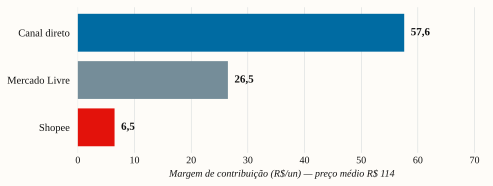
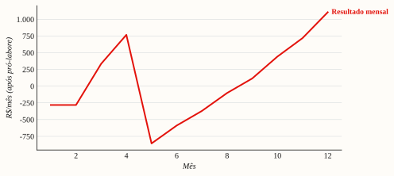
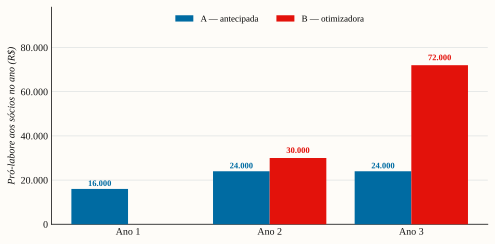

Linha D2C de planners perpétuos premium para dois nichos brasileiros de alto engajamento. É viável começar com R$ 5.000 — desde que a distribuição seja construída organicamente.
| MC/un — canal direto | R$ 57,59 (50%) |
|---|---|
| Caixa retido no ano 1 (Estratégia B) | ~R$ 17 mil |
| Sócios começam a receber | ano 2 |
| Pró-labore 3 anos — B vs A | R$ 102k vs R$ 64k |
É viável começar com R$ 5.000? Sim. O desafio central é construir distribuição — e essa é justamente a força do time: a sócia de conteúdo tem viralização comprovada (milhões de views no TikTok) e o caminho é o orgânico, que ela domina; o outro sócio (economista) cobre estratégia, números e operação. Soma-se a isso a recorrência: o produto é consumível (o concurseiro recompra 3–4×/ano), o que eleva o LTV para ~R$ 374–397/cliente e torna a aquisição muito mais defensável — o tráfego pago frio não se paga numa venda isolada (CAC R$ 120–333), mas cabe no LTV na escala. [mercado-demanda.md · canal-aquisicao.md]
O que o modelo financeiro v2 mostra (cenário-base: 360 un no ano, preço médio R$ 114, custo R$ 45, 90% direto):
| Indicador | Valor | Leitura |
|---|---|---|
| Margem de contribuição/un — canal direto | R$ 57,59 (50%) | preserva margem |
| Margem de contribuição/un — Shopee | R$ 6,48 (6%) ⚠️ | marketplace destrói margem neste preço |
| Break-even do 1º lote | 51 de 54 un (94%) | por isso pré-venda é obrigatória |
| Break-even mensal (pró-labore + DAS) | ~39 un/mês | o teste de viabilidade real |
| Ano 1 — caixa gerado antes do pró-labore | +R$ 16,2 mil (ROI 325% s/ R$ 5k) | o negócio em si é rentável |
| Estratégia de pró-labore recomendada | B (otimizadora) | reinveste 100% no ano 1; sócios sacam só a partir do ano 2 (ver §8) |
| Pró-labore acumulado em 3 anos — B vs A | R$ 102 mil vs R$ 64 mil | a paciência paga mais aos donos, sem sufocar o negócio |
Faixa de cenários (ano 1, resultado após pró-labore — sob a Estratégia A): Conservador −R$ 11,3k · Base +R$ 0,2k · Otimista +R$ 22,1k. A dispersão mostra que o resultado é decidido pela velocidade de aquisição (volume), não pela sorte. (Sob a Estratégia B recomendada, o ano 1 reinveste 100% — ver §8.)
Nota de leitura. Há duas simulações distintas (consistentes, não somáveis): o Cenário Base acima é um retrato anual de 360 un; a Projeção 12M (§8) é uma simulação mês a mês com 387 un e ramp do zero. Ambas mostram o mesmo: o negócio recupera o capital com folga já no ano 1 (≈ R$ 17 mil de caixa antes do pró-labore).
Recomendações centrais:
1. Lançar os DOIS SKUs em paralelo (mesma plataforma física → custo incremental baixo; os sócios encarnam os dois ICPs), com conteúdo equilibrado nos dois nichos.
2. Pré-construir audiência por ~60–90 dias antes de imprimir (lista de espera) — pré-venda sem audiência ≈ zero [estimativa, canal-aquisicao.md]. Mirar 200–500 inscritos antes de abrir vendas.
3. Vender 100% direto na Fase 1 (Instagram/TikTok + checkout próprio + pix). Marketplace só para visibilidade, nunca como canal de receita neste preço.
4. Mídia paga só como retargeting de audiência quente, a partir do mês ~4 — nunca tráfego frio em escala no ano 1.
5. Preço: Concurseiro R$ 119 · Treino R$ 109 (premium defensável; ver §5).
6. Pró-labore na Estratégia B (otimizadora): reinvestir 100% no ano 1, iniciar a retirada só no ano 2 (R$ 500 → R$ 2.000 por sócio) e ampliar no ano 3. Mantém ~R$ 17 mil no negócio no ano mais frágil — e, ainda assim, paga mais aos sócios em 3 anos (R$ 102 mil vs R$ 64 mil da Estratégia A). Pré-condição: os sócios precisam de outra renda no ano 1.
Por que isto se sustenta apesar do mercado pequeno no ano 1: o SOM do ano 1 (≈ 200–600 un Concurseiro / 150–500 un Treino, combinados ~350–1.100 un) [estimativa triangulada, mercado-demanda.md] é limitado por capacidade de aquisição, não por tamanho de mercado — que é grande e persistente (4–6 M concurseiros que estudam ~2 anos; 13–15 M praticantes de academia). É um negócio que começa pequeno e honesto e escala em 2027 (ver §3 e §10) — e, por ser recorrente (recompra 3–4×/ano), cada cliente conquistado vale ~R$ 374–397 de margem ao longo do tempo (LTV), não só a 1ª venda.
⚠️ Premissa crítica a confirmar ANTES de comprometer capital. O custo do micro-lote (R$ 55/un) é faixa de mercado
[a confirmar], não orçamento fechado. Se a gráfica cobrar ~R$ 65/un, R$ 3.000 compram só ~46 un e o break-even do 1º lote fica inviável. Ação nº 1: fechar 3 orçamentos reais de gráfica antes de imprimir (ver §7 e §9).
Dois SKUs sobre a mesma plataforma física (reduz custo de insumo e MOQ): A5, wire-o capa dura, perpétuo (sem datas), miolo offset 90 g, capa soft-touch + hot stamping.
Por que perpétuo (decisão crítica): zero obsolescência de ano, zero estoque morto, venda o ano inteiro. E casa com o comportamento real do cliente: o concurseiro estuda em média 2 anos e 1 mês [confirmado — Censo dos Concursos 2025, n=13.128] e o praticante de força periodiza em ciclos contínuos — ambos têm horizonte plurianual, que um produto datado atende mal.
Ativo já existente: o conteúdo/miolo dos planners já está rascunhado pelos sócios — acelera o protótipo e o golden sample.
[estimativa triangulada] (9.581 concursos abertos em 2025, +57% vs 2024; CNU 2024 teve 2,14 M inscritos) [confirmado — MGI/Folha Dirigida].[confirmado — Censo 2025]; 67,8% estudam empregados → demandam organização de longo prazo. A base é relativamente estável: cada ano parte é absorvida e nova entra.[confirmado — Censo 2025]. Plataformas: Gran R$ 838/ano, QConcursos Elite R$ 779/ano [confirmado, jun/2026].[confirmado, jun/2026] — o mercado paga por método no papel.⚠️ Correção importante de leitura (vs. rascunho original). Não haverá CNU em 2026, mas isso não é fraqueza de demanda — é uma vedação legal de ano eleitoral: a Lei 9.504/97 (art. 73, V) proíbe nomeações de 4/jul/2026 a ~6/jan/2027, e a LRF (art. 21) veda aumento de despesa de pessoal nos 180 dias finais de mandato
[confirmado]. Editais, provas e homologações continuam o ano todo. O ciclo pós-eleição (2027) historicamente retoma com força — em 2023, após a eleição de 2022, foram 9.116 vagas federais autorizadas, +47% que os 4 anos anteriores somados; a PLOA 2026 já prevê ~89 mil provimentos e o CNU 3ª edição é previsto para 2027[a confirmar — sinalizado por fontes de cursinhos; sem decreto publicado]. Enquadramento apartidário: o padrão vale para qualquer vencedor. Conclusão estratégica: 2026 = construir audiência e validar; 2027 = escalar no vento de cauda.
[estimativa triangulada, mercado-demanda.md]: TAM material físico R$ 300–800 M/ano · SAM (compraria planner ~R$ 110) R$ 35–80 M/ano (~400–700 k pessoas; usa proxy de renda familiar — pode estar ~14% superestimado, imaterial ao SOM) · SOM ano 1 R$ 24–71 k (200–600 un); ano 2 R$ 95–238 k (800–2.000 un).[confirmado — HFA/Panorama Fitness 2025]; 6–7 M com foco em musculação; 1,3–3 M seguem treino periodizado/sério [estimativa].[confirmado]. Dado BR específico é pago [a confirmar].[estimativa — buscas não alcançam D2C puro via Instagram/Telegram; jun/2026]. A concorrência é importada (R$ 130–200 no Brasil) ou app (R$ 130–165/ano). Menos concorrência, menos âncora de preço, mais espaço de marca — e recompra (logbook acaba).[estimativa triangulada]: SAM R$ 15–40 M/ano (~150–370 k pessoas) · SOM ano 1 R$ 16–54 k (150–500 un); ano 2 R$ 65–196 k (600–1.800 un).Concurseiro tem ~2× o SAM, mas é mais competido e sazonal; Treino é whitespace com recompra e demanda contínua. Como compartilham a plataforma física (mesmo formato, papel e encadernação → MOQ e custo de insumo conjuntos) e os sócios vivem os dois nichos, lançar ambos diversifica o risco com pouco custo incremental. O limite real é banda de atenção de conteúdo — endereçado com calendário editorial equilibrado e reaproveitamento de formato entre os dois.
| Etapa | Concurseiro | Treino de Força |
|---|---|---|
| Alternativas | Juspodivm (R$ 85–120, datado); perpétuos sem marca (Tche Decor R$ 71–77); PDFs (R$ 35–60); agendas genéricas (R$ 28–57); apps/planilhas | Logbooks importados (R$ 130–200 no BR); nacional genérico (Amor Impresso R$ 77–85, sem periodização); apps Strong/Hevy (R$ 130–165/ano); Canva; caderno comum |
| Atributos únicos | Ciclo + revisão espaçada embutidos; perpétuo (vs. Juspodivm datado); feito por quem é concurseiro e atleta; acabamento premium | Periodização + RPE/RIR + PRs + tonelagem (não só registro); perpétuo; único premium nacional; tátil (não depende de tela na academia) |
| Valor | Estudar com método e constância sem montar planilha; sem comprar exemplar novo todo ano | Progredir carga com método sem celular na academia; rápido, durável; economiza vs. assinatura de app |
| Cliente best-fit | Concurseiro de alto desafio, focado em método e estética | Praticante sério de força, orientado a progressão |
| Categoria | Planner-sistema de estudo para concursos | Diário de força com periodização |
Mapa de preço (mercado, jun/2026):
| Faixa | Produto | Preço | Nosso posicionamento |
|---|---|---|---|
| Genérico | Agendas/cadernos | R$ 28–64 | abaixo da nossa qualidade |
| Premium de marca | Juspodivm (datado) / nacional fitness | R$ 77–120 | nós: R$ 109–119, no topo, por método + perpétuo + acabamento |
| Topo | Importados / apps premium | R$ 130–200 | teto da categoria |
Ponto cego que ocupamos: produto físico, nacional, com método especializado, perpétuo, na faixa R$ 109–119. O Juspodivm prova que pagam R$ 85–120 por método (mas é datado); os importados provam R$ 130–200 (mas têm barreira/idioma); os apps provam R$ 130–165/ano (mas com fricção recorrente e sem tangibilidade). Estamos exatamente no vão entre eles.

Concurseiro R$ 119 · Treino R$ 109 (preço de lançamento). Justificativa em três eixos [concorrencia-preco.md]:
[modelo]. Cobre o break-even mensal de pró-labore + DAS (~39 un/mês) e absorve um CAC de retargeting com folga.O alerta decisivo — marketplace destrói a margem neste preço [modelo · canal-aquisicao.md]:
| MC/un a preço médio R$ 114 | Canal direto | Mercado Livre (Clássico) | Shopee |
|---|---|---|---|
| Custo de canal | ~3% (pagamento) | ~14% + frete R$ 18 | 14% + R$ 20 fixos + frete |
| Margem de contribuição/un | R$ 57,59 (50%) | R$ 26,48 (23%) | R$ 6,48 (6%) |
Correção vs. rascunho: o ML não cobra taxa fixa acima de R$ 79 e o frete grátis é incentivado, não estritamente obrigatório; a Shopee é que aplica R$ 20 fixos na faixa R$ 100–199,99 (≈31% de custo de canal efetivo). Vender direto na Fase 1; entrar em marketplace só para descoberta/prova social, e a preço de regime (≥ R$ 129–139) na Fase 2.
Preço de regime (após validação + reviews): Concurseiro R$ 129–139 · Treino R$ 119–129.
O desafio nº 1 é construir distribuição — e aqui está a maior vantagem do projeto: a sócia responsável por isso tem viralização comprovada (milhões de views) e o caminho é o orgânico, que é o forte dela. A audiência atual é de outros nichos, então é preciso construir presença em concurso/treino — mas a habilidade (a parte difícil) já existe. O tráfego pago frio não se paga numa venda isolada; com a recompra (LTV ~R$ 374–397), porém, ele passa a caber na escala, como reforço do orgânico.
Realidade da aquisição [estimativa, canal-aquisicao.md]:
- CAC de tráfego frio (CPC ÷ conversão): R$ 120–333/venda — inviável contra margem de R$ 57.
- Margem só comporta CAC ≤ R$ 50 → só retargeting/lookalike de audiência quente, que exige audiência primeiro.
- Construir audiência orgânica: ~1.000 seguidores em 3–6 meses; ~10.000 em 12–24 meses em nicho de concurso/força, com produção consistente (Reels/TikTok + carrosséis).
- Meta Ads tem +12,15% de tributos na fatura desde jan/2026 — orce com folga.
- ⚠️ CAC orgânico ≈ R$ 0 é em dinheiro — custa tempo dos sócios (~2–3 h/dia). Na Estratégia B recomendada (§8.1), esse tempo é reinvestimento: os sócios não retiram pró-labore no ano 1.
Sequência (Fase 0 → Fase 1): 1. Mês 1–2 — construção de audiência + lista de espera. Conteúdo orgânico equilibrado nos dois nichos (os sócios são o público); landing page de captura; seeding de unidades-amostra a 6–10 micro-perfis. Meta: 200–500 inscritos antes de imprimir. 2. Mês 3 — pré-venda do golden sample com checkout próprio + pix → micro-lote + pré-pedidos (transfere risco para a demanda real). 3. Mês 4+ — retargeting (R$ 300–500/mês) sobre visitantes/seguidores; afiliados/micro-influenciadores de nicho (melhor ROI que tráfego frio para produto físico de ticket médio).
Mix orgânico/pago defensável no ano 1 [canal-aquisicao.md]: M1–3 100% orgânico · M4–6 80% orgânico + 20% retargeting · M7–12 70% orgânico + 20% afiliados + 10% pago experimental.
Uso dos R$ 5.000:
| Item | R$ | Nota |
|---|---|---|
| Material / 1º lote | 3.000 | ~54 un (custo micro-lote R$ 55) |
| Conteúdo + amostras + seeding | 800 | fotos, brindes a micro-perfis |
| Mídia paga (retargeting, a partir do mês 4) | 800 | não tráfego frio |
| Reserva operacional | 400 | embalagem, frete-teste, checkout |
| Total | 5.000 | reinveste 100% por 4 meses |
Métricas e gates do teste pago (quando ligar retargeting):
| Métrica | Meta | Gate |
|---|---|---|
| Lista de espera pré-lançamento | ≥ 200–500 | < 100 → adiar impressão, focar conteúdo |
| CTR (retargeting) | ≥ 1% | < 0,7% → trocar criativo |
| CAC realizado | ≤ R$ 45 | > R$ 60 consistente → pausar pago, focar orgânico |
| ROAS na janela | ≥ 2,5× | < 2× → reavaliar oferta |
[a confirmar 2026 com contador]; venda doméstica sem ICMS/II por unidade). Teto ~R$ 81 mil/ano: o SOM do ano 1 (R$ 40–130 mil) pode encostar no teto no cenário otimista → migrar para ME/Simples ao se aproximar. Atenção: como MEI o ICMS de importação não é creditável (piora a conta da China).[a confirmar por 3 orçamentos, sourcing-tributos.md].
viabilidade-planners-v2.xlsx)Unit economics (preço médio R$ 114, custo reposição R$ 45):
| Direto | Merc. Livre | Shopee | Blended (90/10) | |
|---|---|---|---|---|
| Margem de contribuição/un | R$ 57,59 | R$ 26,48 | R$ 6,48 | R$ 54,48 |
| Margem (%) | 50% | 23% | 6% | 48% |
Composição por canal (por un, a R$ 114): direto deduz ~R$ 11 (pagamento 2,5% + embalagem R$ 4 + devoluções 4%); Mercado Livre soma comissão ~14% + frete ~R$ 18; Shopee ainda inclui taxa fixa de R$ 20 — por isso sua MC cai a R$ 6,48.
Recorrência (o que muda o jogo): o produto é consumível — o concurseiro recompra 3–4×/ano. Isso eleva o LTV para ~R$ 374–397 de margem por cliente (LTV/CAC ~7–8× no orgânico) e faz da recompra o motor de receita a partir do ano 2. Em fluxo, o mercado é de ~2,3 M un/ano (ver estudo de mercado §4.5 e aba LTV & Recorrência).
Cenários (ano 1, R$ 5.000) — com dupla linha de resultado:
| Conservador | Base | Otimista | |
|---|---|---|---|
| Unidades no ano / preço médio / custo | 180 / R$ 109 / R$ 52 | 360 / R$ 114 / R$ 45 | 650 / R$ 119 / R$ 40 |
| % direto | 80% | 90% | 95% |
| Caixa gerado ANTES do pró-labore | +R$ 4,7k | +R$ 16,2k | +R$ 38,1k |
| ROI do capital (antes / s/ R$ 5k) | 94% | 325% | 762% |
| (−) Pró-labore — Estratégia A (8 meses × R$ 2k) | −R$ 16k | −R$ 16k | −R$ 16k |
| Resultado DEPOIS do pró-labore | −R$ 11,3k | +R$ 0,2k | +R$ 22,1k |
Como ler as duas linhas. Antes do pró-labore = o caixa que o negócio gera (recupera os R$ 5 k com folga já no base). Depois do pró-labore = se o negócio banca os dois sócios (Estratégia A, R$ 2 k/mês a partir do mês 5). O Conservador (volume baixo + custo alto + venda fraca) consome a reserva: o antídoto é a disciplina de aquisição.
Quanto e quando os sócios retiram pró-labore quase não mexe na margem, mas muda muito a velocidade de capitalização no ano mais frágil. Duas estratégias (aba Pró-labore (AxB), com a mesma trajetória de vendas nas duas):
| Indicador (3 anos, base) | Estratégia A | Estratégia B |
|---|---|---|
| Sócios começam a receber | mês 5 | ano 2 (mês 13) |
| Pró-labore no ano 1 | R$ 16 mil | R$ 0 |
| Caixa reinvestido no negócio — ano 1 | R$ 1,2 mil | R$ 17,2 mil |
| Pró-labore acumulado aos sócios — 3 anos | R$ 64 mil | R$ 102 mil |
| Caixa do negócio acumulado — 3 anos | R$ 211 mil | R$ 174 mil |
Por que a B é melhor para construir para escalar: mantém 14× mais caixa no negócio no ano 1 — quando o capital constrói audiência, financia lotes maiores e aproxima o limiar da China (≥ 3.000 un) — e ainda paga mais aos sócios em 3 anos, porque deixa o negócio compor antes de remunerar. O preço da B é a disciplina: renda zero para os sócios no ano 1 (exige outra fonte de renda nesse período). Se isso não couber no orçamento pessoal, a A é o fallback — paga cedo, ao custo de um crescimento mais lento. (A trajetória é mantida igual nas duas; o reinvestimento extra da B tende a elevar ainda mais o crescimento — ou seja, a comparação é conservadora a favor da B.)
Projeção 12 meses (base, sob a Estratégia A): ramp do zero (M1–2 sem venda, lançamento no M3), 387 un no ano; o negócio passa a cobrir o pró-labore por volta do mês 9–10; resultado acumulado após pró-labore cruza zero ao fim do ano (+R$ 1,0k) e o caixa operacional antes do pró-labore soma ~R$ 17 k (recupera o investimento com folga). (Ajuste Unidades e Marketing na aba Projeção 12M.)
Onde o lucro escala: a recompra (cada cliente retido gera ~3 vendas/ano sem novo CAC), a reposição com margem cheia, a migração para a China na Fase 2 (≥ 3.000–5.000 un) e o vento de cauda do ciclo de concursos em 2027.
Premissas-chave e fontes (datadas, jun/2026): câmbio ≈ R$ 5,18 (Investing.com, 17/jun); concorrência Juspodivm R$ 85–120 / importados R$ 130–200 (Amazon); taxas ML 11–19% sem fixa ≥R$79 e Shopee 14% + R$ 4–26 fixos (XP, Tributei, E-commerce Brasil); Meta Ads CPC R$ 0,80–5, conversão 1,2–2,2%, +12,15% tributos (Trafius, aintegrare, E-Dialog); mercado (Censo dos Concursos 2025; HFA/Panorama Fitness 2025). Detalhe em research/evidence/.

| Risco | Sev. | Mitigação |
|---|---|---|
| Distribuição/aquisição nos nichos (risco nº 1) | Média | Conteúdo orgânico — forte da sócia (viralização comprovada); lista própria pré-lançamento; recompra eleva o LTV (CAC pago cabe na escala); afiliados de nicho |
| Custo real da gráfica acima do previsto | Alta | 3 orçamentos reais antes de comprometer capital; se micro-lote > R$ 60/un, recuar para Tier B ou ajustar preço/tamanho do lote |
| Dependência de plataforma de mídia social (algoritmo/ban) | Média-Alta | Diversificar (Instagram + TikTok) e construir lista de e-mail própria — o ativo que a plataforma não tira |
| Sell-through baixo → encalhe | Alta | Pré-venda antes de imprimir; micro-lote (54 un); perpétuo (estoque não vence) |
| Capacidade de execução (2 pessoas, sem força em mídia/ops) | Média | Calendário de conteúdo enxuto e reaproveitável; terceirizar/aprender ops e tráfego só quando houver caixa |
| Marketplace corrói margem | Média | Vender direto na Fase 1; marketplace só p/ descoberta, a ≥ R$ 129 |
| Frete grátis corrói margem | Média | Cliente paga o frete por padrão; se ofertar frete grátis, embutir no preço (senão a MC/un cai de R$ 57 para ~R$ 22–37) |
| Qualidade da gráfica | Média | Golden sample aprovado por escrito + prova física antes do lote |
| Teto MEI / tributário | Média | Contador; gate numérico: ao atingir ~R$ 68 mil de receita acumulada, iniciar migração a ME/Simples (teto ~R$ 81 mil/ano) |
| Câmbio/qualidade na escala (China) | Média | Só após validação, ≥ 3.000 un; travar câmbio; despachante; inspeção pré-embarque |
| Concorrência reage (Juspodivm/novos) | Baixa-Média | Diferenciação por método + perpétuo + estética; Treino é whitespace; marca dos fundadores |
Lista de espera (pré-lançamento) · sell-through % do lote · unidades/mês vs. break-even de pró-labore (39) · CAC e ROAS realizados · margem de contribuição realizada por canal · taxa de recompra/indicação · % vendas diretas vs. marketplace · caixa operacional acumulado · seguidores e engajamento orgânico por nicho.
Documento interno de apoio à decisão dos sócios. Custos de produção a confirmar por orçamento de gráfica; tributos/MEI por contador; alíquotas de importação por despachante. Números do cenário-base correspondem a models/viabilidade-planners-v2.xlsx. Não constitui recomendação financeira. Metodologia e fontes datadas em research/evidence/ e docs/methodology.md.
Marcações de confiança usadas no texto — [confirmado]: fonte primária datada e verificável · [estimativa triangulada]: ≥2 fontes convergentes, sem confirmação formal · [a confirmar]: faixa de mercado, não apresentada como fechada.
Mercado: Censo dos Concursos 2025 (QConcursos/Folha Dirigida); HFA/Panorama Fitness 2025; MGI. Concorrência/preço: Amazon, Mercado Livre, Shopee (jun/2026). Canal: XP, Tributei, E-commerce Brasil, Trafius, aintegrare, E-Dialog. Detalhe datado em research/evidence/. Números do cenário-base = models/viabilidade-planners-v2.xlsx.